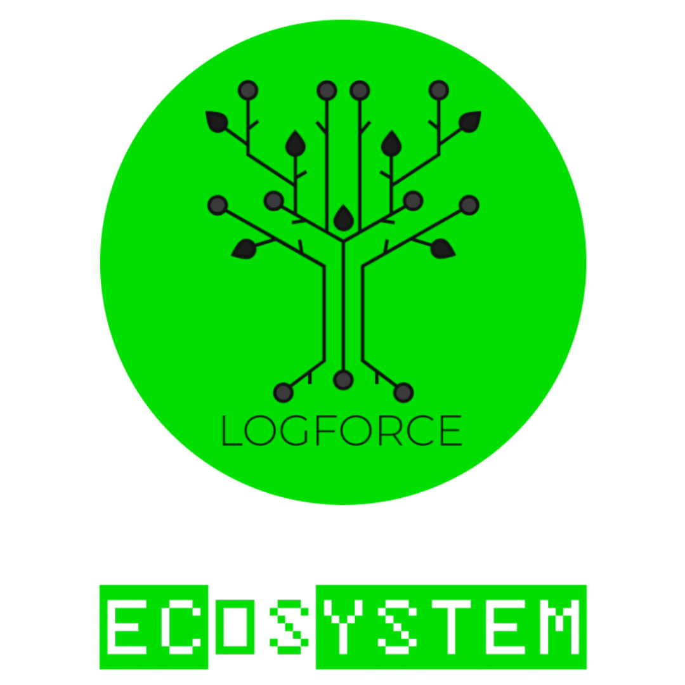

The open OS bringing a new POSIX to machine intelligence.
ecOS is built around CogPOSIX, a system-level execution standard for running AI models as native computing resources, designed for performance and security.
Traditional AI application compared with an ecOS application
ApplicationsRequest AI capabilities, not implementations
ProductivityDevelopmentAnalyticsCreativeand more
↓
CogPOSIXA system contract for AI computation (inspired by POSIX)
Standardized interface
Capability-based
Implementation-agnostic
↓
ecOSThe operating system determines which implementation may satisfy the request, where it executes, which resources it may use, which data it may access, and whether it may leave the machine at all.
Core Principles
Intelligence should execute as close to the data as possible
Cloud computation is not the default
Every transition across a trust boundary is a policy decision
Distribution is not automatic
Our OS. Our system contract.
Many models. One system interface.
ecOS >_ and CogPOSIX are being developed together: a new operating system and its AI execution contract. Applications use CogPOSIX to access controlled intelligence as a system resource, across model classes.
>_
Build against a contract.
CogPOSIX
Open a model. Share typed data. Submit a job. Manage its lifecycle. A POSIX-inspired execution interface makes controlled models part of the application stack, beyond a single provider or model class.
Meet CogPOSIX →Code: Apache-2.0 · Specification: CC BY 4.0[ ]
Make local the default.
ecOS runtime
A task solved on your machine needs no remote inference tokens. The runtime coordinates model execution, data ownership and jobs, starting with a working Linux CPU backend.
We are building our own OS architecture around local intelligence, with applications, controlled models and recovery designed together. The current runtime prototype runs on Linux; the complete installable OS is in development.
The right tool may be a vision model, a signal processor, a language model or a conventional algorithm. The design puts task suitability and local control first. It does not make every problem an LLM request.
Planned capability
Distributed intelligence, when you want it.
Local-first does not mean isolated. ecOS is designed to let approved workstations, AI nodes and edge devices share execution within a controlled policy domain, only when distribution has been explicitly enabled.
ecOS policy domain
Workstation
GPU / NPU
AI node
GPU / NPU
Edge node
Accelerator
CogPOSIX fabric
Shared compute. Explicit boundaries.
Applications keep a common capability contract. Policy controls node participation, authentication, model availability, data classes and execution locality. Another machine is always another execution boundary, even on your own network.
Shared knowledge. Separate permission.
Candidate services such as DuckDB and Qdrant could support analytics, retrieval and evaluation across approved datasets. Access to data does not authorize training on it. Model improvement requires its own governed, evaluated workflow.
Distributed execution and database integration are planned, not available in the current runtime. The standalone local experience remains independent of this feature.
The developer prototype connects Rust and C applications to local inference. Today it runs one pinned digit-classification model. Scheduling, model packages and the installable OS are the next chapters.
Working / R1
Execution contracts
Rust and C clients, typed handles, asynchronous jobs, cancellation and resource cleanup.
Run the ONNX validationnode scripts/validate-linux.mjs --onnx
Build from a source checkout with Rust, a C compiler and Node.js. ONNX validation also requires Docker; its initial image build downloads dependencies and a pinned model, then tests run offline. The runtime is a developer prototype; the OS installer is still on the roadmap.
An open ecosystem
Independent at the core. Connected by choice.

Sovereignty includes the freedom to choose your security providers. LOGFORCE is the planned optional connection for proprietary analytics and enterprise security, through an open integration contract.
Open integration. Real choice.The planned event schema and basic bridge will use Apache-2.0 when released. The community runtime remains independently usable, and other analyzers can implement the same contract.
LOGFORCE stays separately licensed.Its intelligence, models, enterprise sensors and commercial modules remain proprietary under their own agreements. No LOGFORCE engine or integration is included in the current runtime.
Apache-2.0 for the community software. CC BY 4.0 for the specification and documentation. Commercial use is welcome under those terms; LOGFORCE and third-party assets keep their separate licenses.
Not included. No rights granted by this repository's open licenses.
Enterprise modules & premium feeds
Separate commercial agreements
Optional proprietary distribution; data and service rights defined separately. No current support SLA.
Linux, dependencies, firmware & datasets
Original component licenses
No umbrella relicensing. OS distribution requires an inventory and applicable notices/source delivery.
Third-party model weights
Original artifact terms
Not in the source export. The optional MNIST download has an upstream MIT model notice and Apache-2.0 repository license; asset review remains required.
Website & document reader
Apache-2.0 / CC BY 4.0 / MIT
Project code: Apache-2.0. Prose and generated concept illustration: CC BY 4.0 where copyright applies. Marked: MIT. DOMPurify: Apache-2.0 option. Third-party notices.
Shown to identify the project. No open artwork or trademark license; separate permission may be needed for reuse.
Commercial use of the Apache-2.0 and CC BY 4.0 material is permitted under those licenses. Community use creates no paid-service contract. Full license scope · Community terms · Brand policy
Build together
Your next idea belongs here.
Meet the community, challenge a design or bring a working example. Choose the right place to start.
Slack
Introduce yourself, ask for help, share demos and collaborate with other builders. Bring lasting answers and decisions back to the public project discussions.
Open Slack ↗Workspace membership may be required. This link opens Slack sign-in.
GitHub Repository
Explore the source code, run the prototype and contribute changes through pull requests reviewed by the maintainer.
Report reproducible bugs with expected behavior, actual results and environment details. Track agreed development tasks here; never include secrets or private data.
Community membership does not grant repository write access. Contributor roles and changes to the official project require maintainer approval. Contribution guide · Community terms
The next layer is open
Build intelligence into the system.
Help shape the interface between applications, controlled models and the machines they run on.